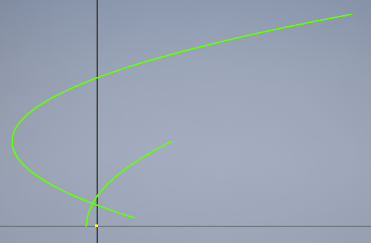

stumbling into aerodynamics
Home Posts About Me
Posts
8/26/2016 - Airfoils
I've been learning about airfoils and how exactly they produce lift and contribute to the aircraft's motion. I started with learning the convention behind naming basic airfoils. One of the main standards was set by NACA. There exists four, five, and six digit NACA airfoils. I have learned about the four digit system, but the same ideas extend into the additional digits.
Let's try an example. I would like to use the NACA 3410 airfoil. What does this mean? Let's start with the meaning of each character. The four digits, such as 3410, are generally denoted as MPTT.
- M represents the maximum camber in terms of a percentage of the chord.
- P stands for the location of the maximum camber along the chord in terms of tenths of the chord
- TT communicates how thick the airfoil will be at it's thickest point in terms of a percentage of the chord.
As a result, NACA 3410 means that the specified airfoil has a maximum camber that measures 3% of the chord, the maximum camber occurs 40% down the streamwise direction, and the thickest point is 10% of the chord.
I tried to use the NACA equations to construct an airfoil using Autodesk Inventor, but I ended up with this:

That's definitely incorrect. I'm not sure what went wrong, but I'll investigate this more once I talk to someone who can help with the math. I researched methods of modeling an airfoil and found that people do not normally model NACA airfoils using parametric equations. The workflow I used was this:
- Ascertain a .DAT file containing points along the airfoil (this can be generated by a program written by NASA).
- Import the .DAT file into a Microsoft Excel spreadsheet.
- Import the Excel file into a sketch in Inventor.
- Use an interpolation spline to connect the points.
- Extrude!
In this way, I was able to model a NACA 3410 airfoil. It looks like this:
I then imported that model into Autodesk Flow Design Analysis. This gave me this clip: